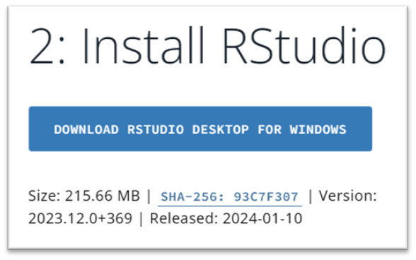
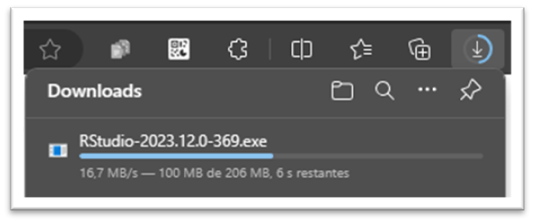
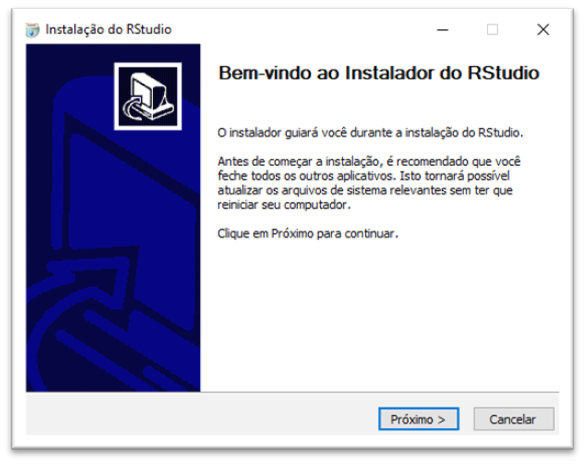
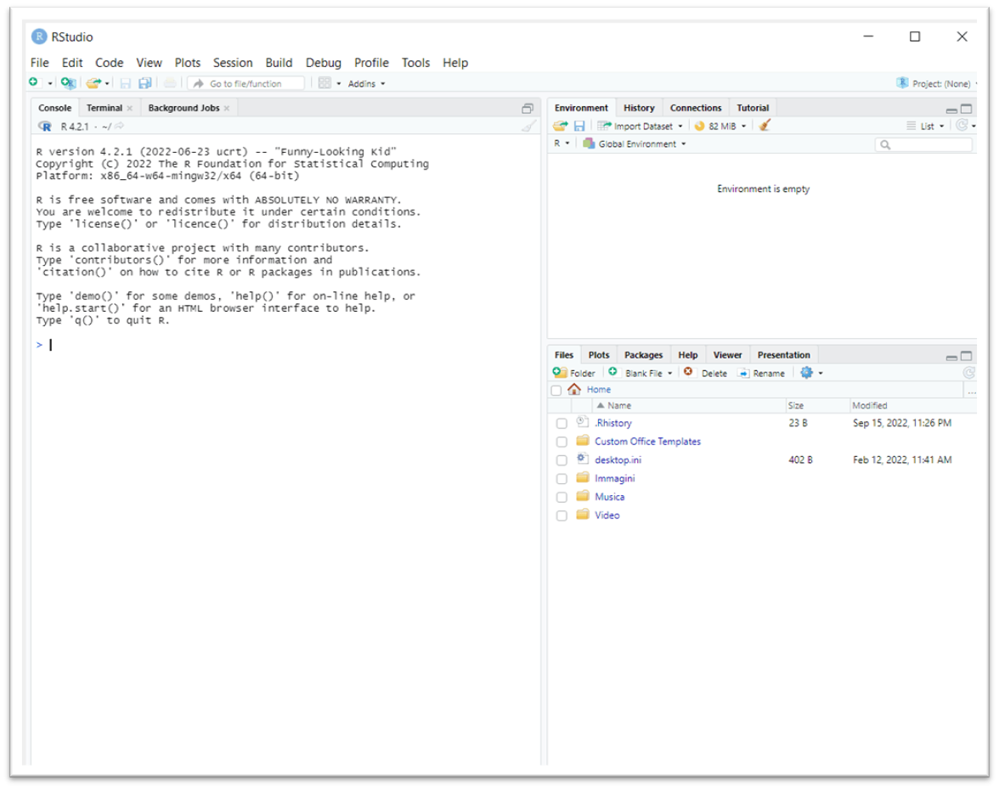
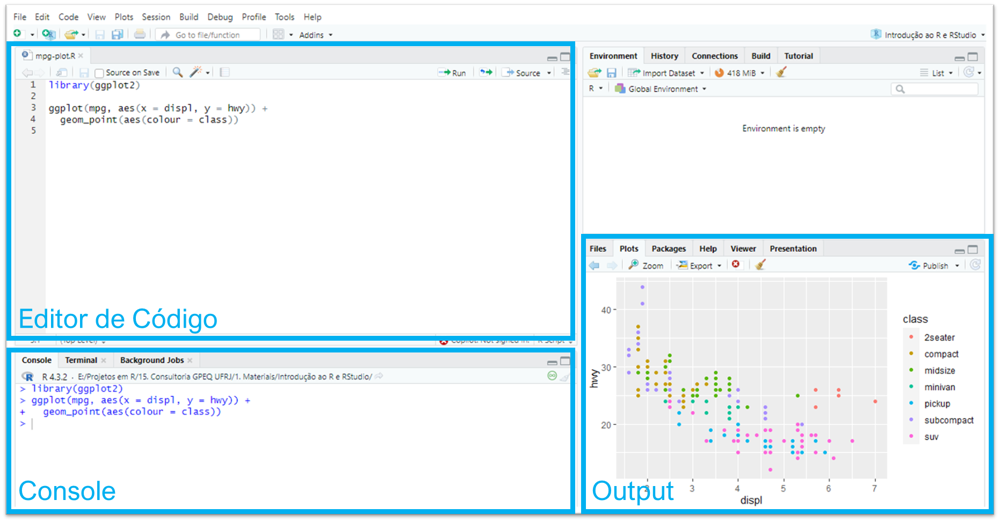

3 Instalando o RStudio
Acontece que o RGui não é tão prático de se usar. Pensando nisso, a empresa Posit criou um Ambiente de Desenvolvimento Integrado (Integrated Development Environment, IDE) chamado RStudio. Em nosso contexto, tanto GUI quanto IDE são ferramentas que permitem a utilização da linguagem. A diferença é que a IDE tem atributos com a finalidade de facilitar o desenvolvimento dos códigos. Grosso modo, toda IDE é uma GUI mas o inverso não é verdadeiro (nem toda GUI é uma IDE).
Em resumo: é muito mais fácil utilizar o R através do RStudio e, por este motivo, vamos baixá-lo na sua versão gratuita (que já é suficiente para os cursos que serão ministrados no Instituto).
3.1 Três passos
Para instalar o RStudio no Windows, novamente iremos seguir alguns passos – nesse caso, apenas 3:
Acesse a página de downloads da RStudio: https://posit.co/download/rstudio-desktop/#download. Se você tiver acesso de administrador, basta clicar em ‘Download RStudio Desktop for Windows’.

De forma análoga ao download do R, você receberá um aviso de que o arquivo está sendo baixado (na sua pasta de ‘Downloads’ ou similar).

Clique duas vezes no arquivo que você baixou e siga as instruções recomendadas de instalação, cuja tela inicial está na imagem abaixo.

Ao final da instalação, você deverá ser capaz de abrir o RStudio no seu computador, resultando em algo similar à imagem abaixo. No Windows, provavelmente você o encontrará no caminho:
C:\ProgramData\Microsoft\Windows\Start Menu\Programs\RStudio

Feito? Então estamos prontos para utilizar o R através do RStudio!
3.2 Conhecendo o RStudio
A seção 3.2 ‘Conhecendo o RStudio’ é baseada na seção 2.1 ‘Telas’ do livro Ciência de Dados em R, feito pelo Curso-R. De qualquer modo, eventuais erros são inteiramente de nossa responsabilidade.
O RStudio será o ambiente no qual iremos trabalhar com a linguagem. Por essa razão, é muito importante que você se sinta confortável com o que verá no seu computador após abrí-lo. Nessa seção, iremos compreender melhor o layout do RStudio, além das utilidades que ele nos proporciona ao longo do processo de escrita dos códigos.
Ao abrir o RStudio pela primeira vez (como na imagem anterior), você verá inicialmente 3 quadrantes. Um deles, preenchendo a parte esquerda da tela, já conhecemos: é o Console, que cumpre o mesmo papel explicado no capítulo anterior. Ao mesmo tempo, o quadrante que mais utilizaremos não aparece inicialmente: é o Editor de Código, outro velho conhecido que também possui a mesma atribuição anterior. Tal como no caso do RGui, o Editor não abre automaticamente pois o RStudio não é capaz de saber se o usuário tem o desejo de construir um código do zero – ou seja, criar um novo arquivo com extensão .R – ou apenas dar continuidade à algum em que já estava trabalhando.
No fim das contas, teremos 4 quadrantes:

Por padrão, os quadrantes estarão dispostos na sua tela da forma como mostramos na imagem acima, mas você pode organizá-los da forma que preferir acessando a seção Pane Layout da opção Global options... no menu Tools.
É importante que você entenda que o Editor e o Console são os dois principais quadrantes do RStudio. Passaremos a maior parte do tempo neles. Como não custa nada, vamos relembrar suas respectivas serventias:
Editor de Código: é local em que escreveremos/editaremos nossos códigos, salvando posteriormente em um arquivo do tipo
.R. Conforme formos avançando, você acabará reparando que temos algumas melhorias em relação ao RGui:- O RStudio colore algumas palavras e símbolos para facilitar a leitura do código. Por exemplo, tudo o que for comentário será de uma determinada cor, assim como tudo que você escrever entre aspas – considerado texto passível de ser executado como parte de um código – será de outra.
- Outra funcionalidade interessante do Editor no RStudio é a capacidade de você poder buscar e substituir determinadas palavras/expressões que estejam presentes no código, poupando tempo e evitando erros caso o fizessemos de forma maunal; para tal, basta clicar no símbolo da lupa logo acima da primeira linha.
- Além disso, o RStudio possui o recurso de autocompletar partes de um código! Caso você esteja escrevendo o nome de um objeto que ele consiga identificar, receberá automaticamente uma sugestão para completar a escrita, bastando apertar a tecla
Tabpara aceitá-la.
Console: é local em que o código é executado e recebemos as saídas. Nele, temos também o recurso de autocompletar nomes de objetos. Para limpar o Console, isto é, excluir o registro do que já foi executado pelo R, basta clicar no símbolo de vassoura, no canto direito superior do quadrante, ou então utilizar o atalho
Ctrl + L.
Os demais quadrantes do lado direito contém painéis auxiliares. O objetivo deles é facilitar pequenas tarefas que fazem parte tanto da programação quanto da análise de dados como, por exemplo, olhar a documentação de funções, analisar os objetos criados em uma sessão do R, procurar e organizar os arquivos que compõem a nossa análise, armazenar e analisar os gráficos criados e muito mais.
No quadrante superior, temos
Environment: painel com todos os objetos criados na sessão. Será bastante útil como referência para avaliar os objetos que criamos ou deixamos de criar com determinado comando.
History: painel com um histórico dos comandos rodados.
Já no quadrante inferior, temos
Files: mostra os arquivos no diretório de trabalho. Nele, é possível navegar entre as pastas do seu computador! Você pode, por exemplo, abrir um arquivo do tipo
.Rsem necessariamente ter que passar pela janela de busca do seu sistema operacional.Plots: painel onde os gráficos serão apresentados, caso você crie um código que os produza.
Packages: apresenta todos os pacotes instalados e carregados.
Help: janela onde as documentações de funções serão apresentadas.
Viewer: painel onde relatórios e dashboards serão apresentados.
Além do Console e do Editor, dê atenção especial aos painéis Environment, Help e Plots, nesta ordem.